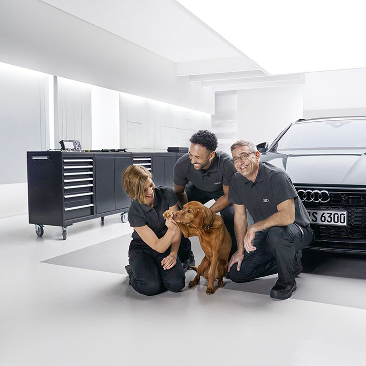

Bij Audi Service Center staan we klaar om u en uw Audi de hoogste kwaliteit service te bieden. Met toewijding aan vakmanschap, precisie en klanttevredenheid bieden we een scala aan diensten die voldoen aan uw behoeften en de normen van Audi. Onze gecertificeerde technici zijn getraind om uw Audi te onderhouden en repareren, en we gebruiken alleen originele Audi-onderdelen voor optimale prestaties.
Onderhoudsbeurten
Regelmatig onderhoud is essentieel om uw Audi in topconditie te houden. We bieden uitgebreide onderhoudsbeurten die voldoen aan de specificaties van uw voertuig, inclusief olieverversing, filters vervangen, bandenservice en meer.
Diagnostiek en Reparaties
Onze technici zijn uitgerust met geavanceerde apparatuur om snel en nauwkeurig problemen te diagnosticeren en reparaties uit te voeren, zodat uw Audi snel weer de weg op kan.
Onderdelen en Accessoires
We bieden originele Audi-onderdelen en accessoires om ervoor te zorgen dat uw voertuig zijn optimale prestaties behoudt en voldoet aan de hoogste veiligheids- en kwaliteitsnormen.
Garantieservices
Als erkend Audi-servicecentrum bieden wij garantieservice voor uw voertuig, zodat u gemoedsrust heeft bij eventuele garantiegerelateerde kwesties.